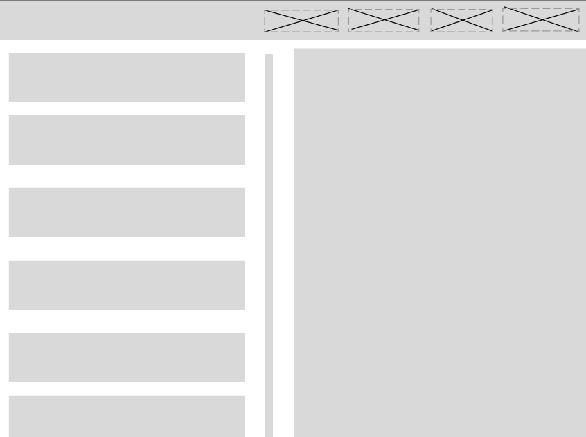
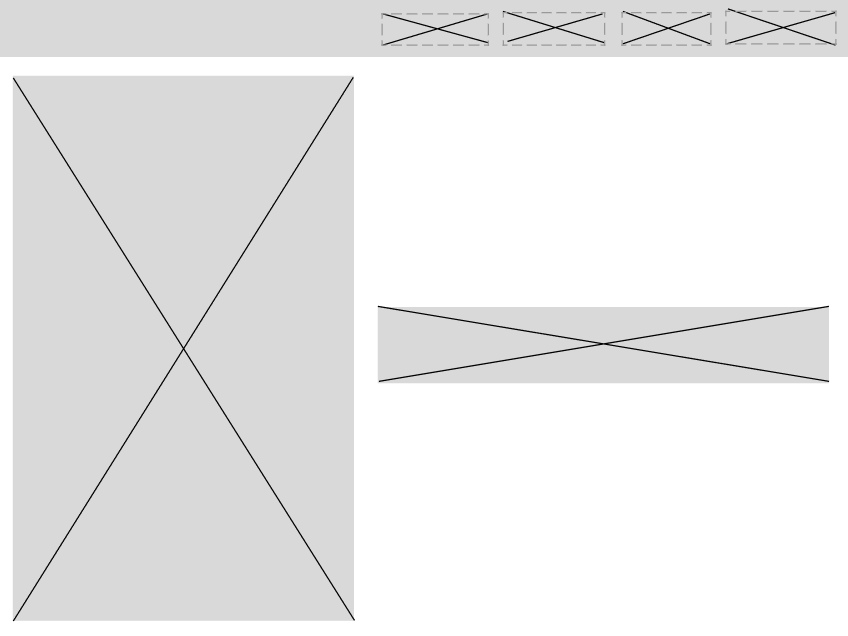
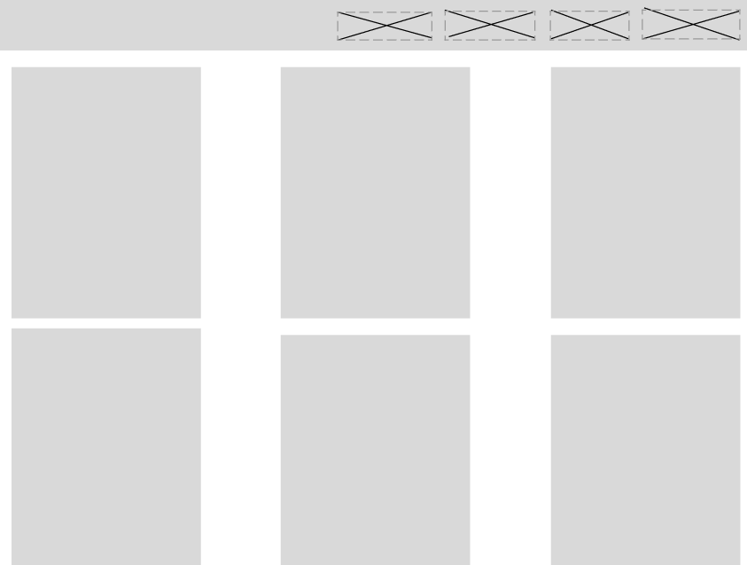
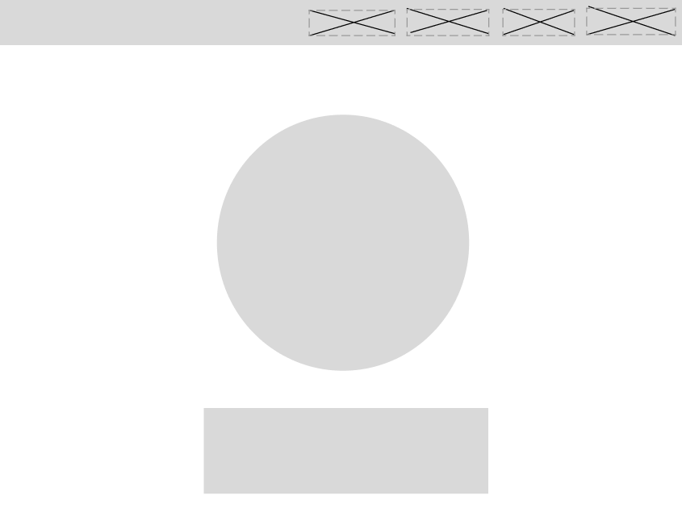

My original wireframe does resemble my current vision of how I envision my website, but I would like to convey a lot more information to the user. For example, I want to include a summary of each blog post that users can read before deciding to engage with the full article. Additionally, it would be great to have a dedicated section where users can easily view updates and highlights on a specific page.
While working on my first website, I struggled to integrate dedicated pages for certain sections, such as blogs or essays. Instead, I initially had all blog posts on a single page until I learned how to properly reference files. I also managed to create a dedicated home button that allows users to navigate back to the homepage. Although I would have liked to make the website much neater and more visually appealing, this was one of the areas I found particularly challenging.
|  |  |
|  |  |